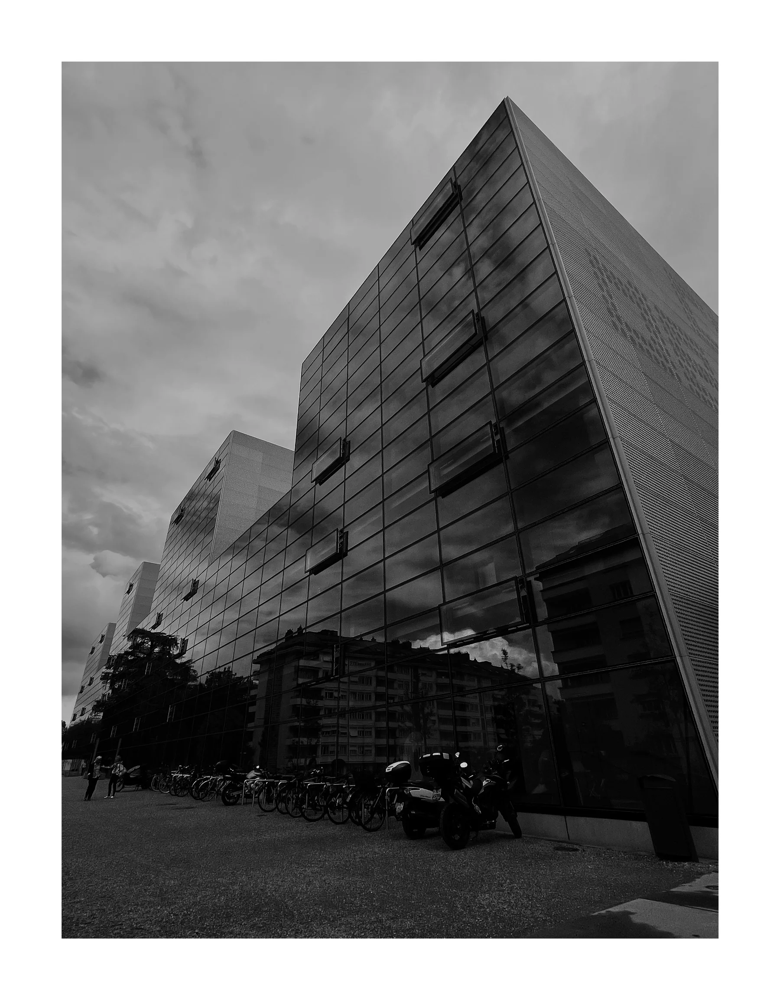
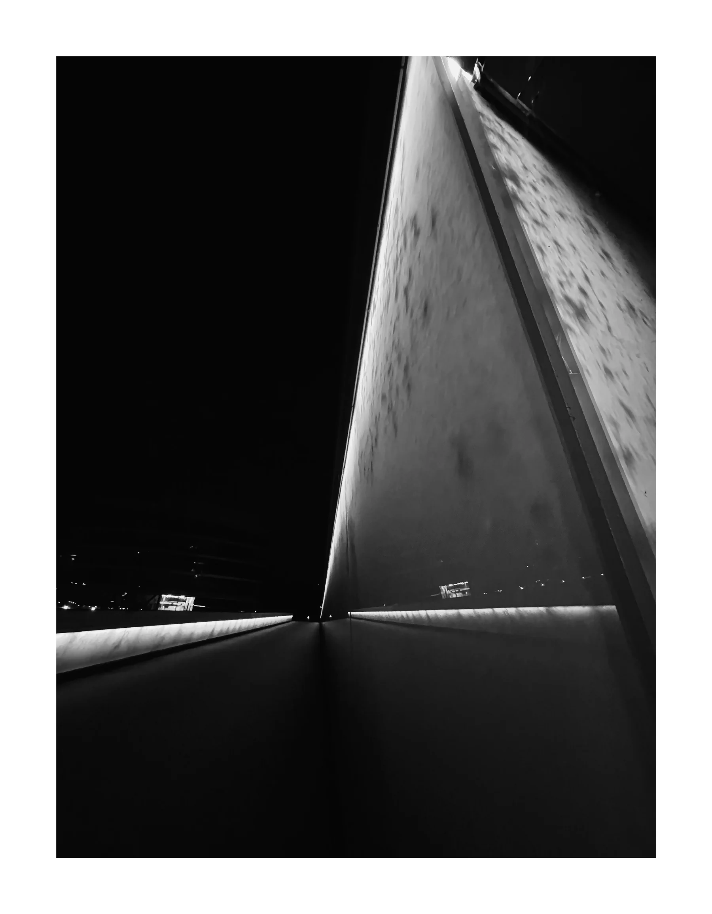
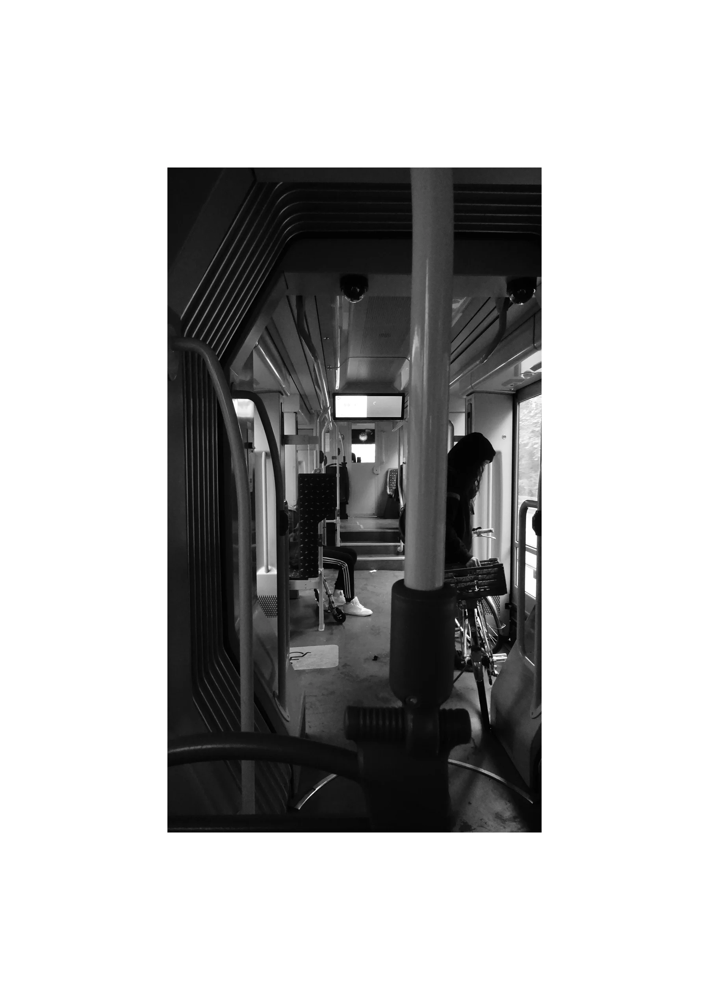
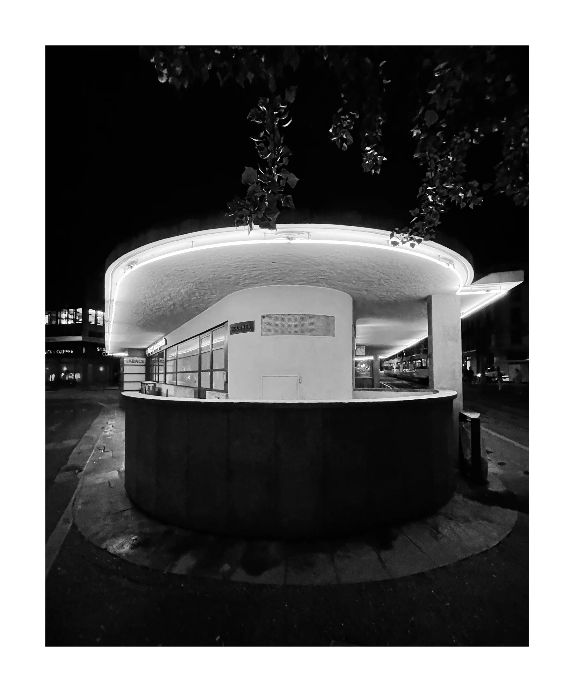
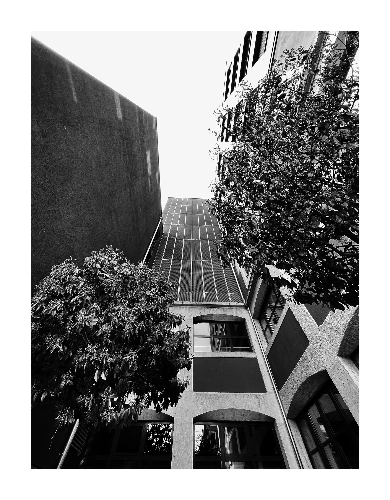
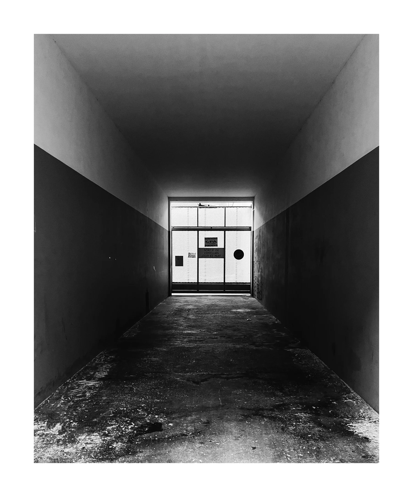

Fine-art photography / WhiteWall collection 01
THE CITY
HOLDS STILL.
Six black-and-white studies of structure, night and public movement. The original production masters have been uploaded to WhiteWall; every edition remains unframed, numbered and held for a physical proof.
Request collector information ↗

Nocturne ArcStudy 02 · inquire ↗
Transit InteriorStudy 03 · inquire ↗
After HoursStudy 04 · inquire ↗
Courtyard VerticalStudy 05 · inquire ↗
End GateStudy 06 · inquire ↗Edition standard
ONE IMAGE.
ONE SHARED EDITION.
Each approved image will be released in 30 × 40, 45 × 60 and 60 × 80 cm formats, with one shared edition of 100 across all sizes. The intended finish is Hahnemühle Photo Rag 308 gsm, unframed, with a numbered certificate.
Read the making standards ↗Collector information
THE EDITION
QUESTIONS.
What does “one shared edition of 100” mean?
All three sizes of a photograph draw from the same pool of 100. A collector choosing any size reduces the remaining edition for that work.
Are the prints supplied framed?
No. Every work is supplied unframed so collectors can select framing that suits their own space and conservation requirements.
What paper and printing process are used?
The intended release uses archival pigment inks on Hahnemühle Photo Rag 308 gsm, 100% cotton paper. Each size is being proofed before release.
Will I receive a certificate?
Each approved edition will be recorded and delivered with its own numbered certificate. Checkout opens only once this process is fully operational.
Collector desk / private appointments / worldwide
info@domuscultura.com ↗@domuscultura ↗Collector enquiries